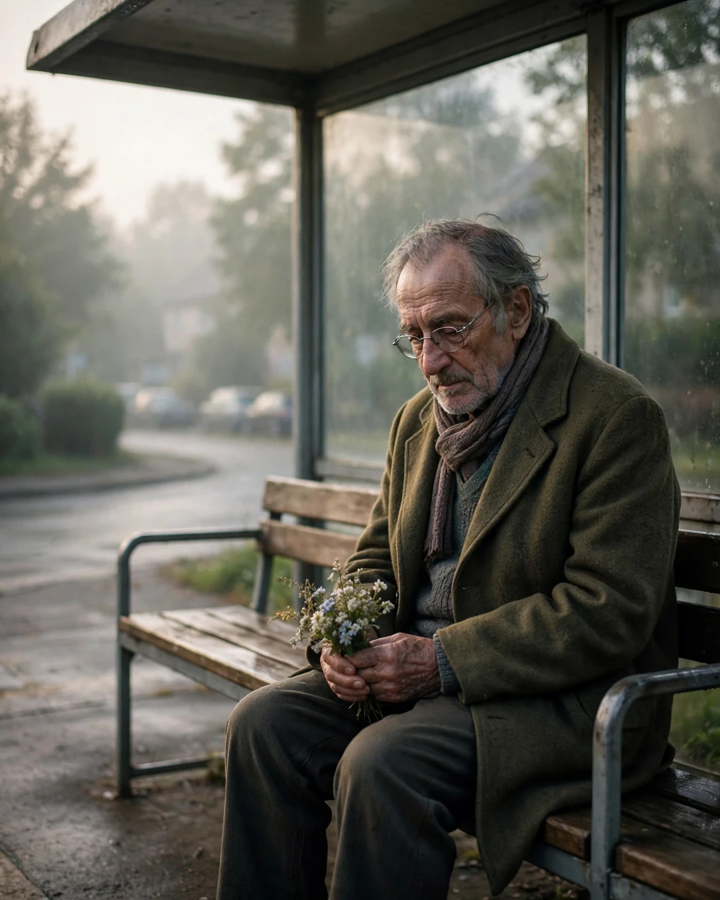

The Bus Stop Bench
A Clipp Kaili original story

The old man was at the bus stop every morning at seven, holding a small bunch of flowers, and he never got on the bus.
Mia noticed him on the first day of third grade. By October, she couldn't stand it anymore.
"Why do you sit here every day?" she asked, swinging her legs off the bench. "And who are the flowers for?"
"For Margaret," he said. "She used to ride the 7:10 bus."
"Where is she now?"
"Gone a year this spring." He said it the way people talk about weather moving in — plain, and a little sad. "But I made a habit of this bench a long time before that, young lady. Fifty-two years, to be exact."
He told her the story in pieces, the way old men do, a little more each morning while her mother stood nearby pretending not to listen.
In 1972, Margaret worked at the dress shop downtown and rode the 7:10 bus every day. Walter was a young mechanic with grease on his hands and no courage at all. So he did the only thing he could think of: he started showing up at her bus stop. Every morning. Rain, snow, flu, didn't matter. For eleven months, he sat on that bench and read a newspaper he never actually read, working up the nerve to say one sentence.
"One morning it snowed so hard the buses almost stopped," he told Mia. "And there she was, running in her red coat, and she slipped — and I caught her. First thing I ever said to her was, 'Careful, miss.' First thing she said to me was, 'You've been careful for eleven months, Walter. It's about time.'"
Mia gasped. "She KNEW?"
"Women always know," Walter said. "She told me later she started taking the early bus just to sit near the fool who was too shy to speak."
They married that June. And for fifty years, through babies and bills and one war and two bad knees, Walter walked Margaret to that bench every morning he possibly could. Some days with coffee. Some days with flowers. The last year, when her legs gave out, he carried her bag and she leaned on his arm, and they sat together until the bus came, even though she hadn't worked at the dress shop in twenty years.
"We weren't going anywhere," he said. "We were just keeping the habit. Love isn't the wedding, Mia. Love is the bench. It's showing up at the same place, at the same time, for the same person, until showing up becomes who you are."
The next morning, Mia brought a flower from her mother's garden and laid it on the bench beside him.
The morning after that, her mother brought coffee.
The 7:10 bus still doesn't stop for Walter. But these days, if you pass that bench at seven in the morning, you'll see an old man, a young mother, and a little girl with a backpack, all sitting together with flowers — keeping a habit that love built, one ordinary morning at a time.
This story is a work of fiction, written to touch hearts and bring families closer.
← Back to all stories